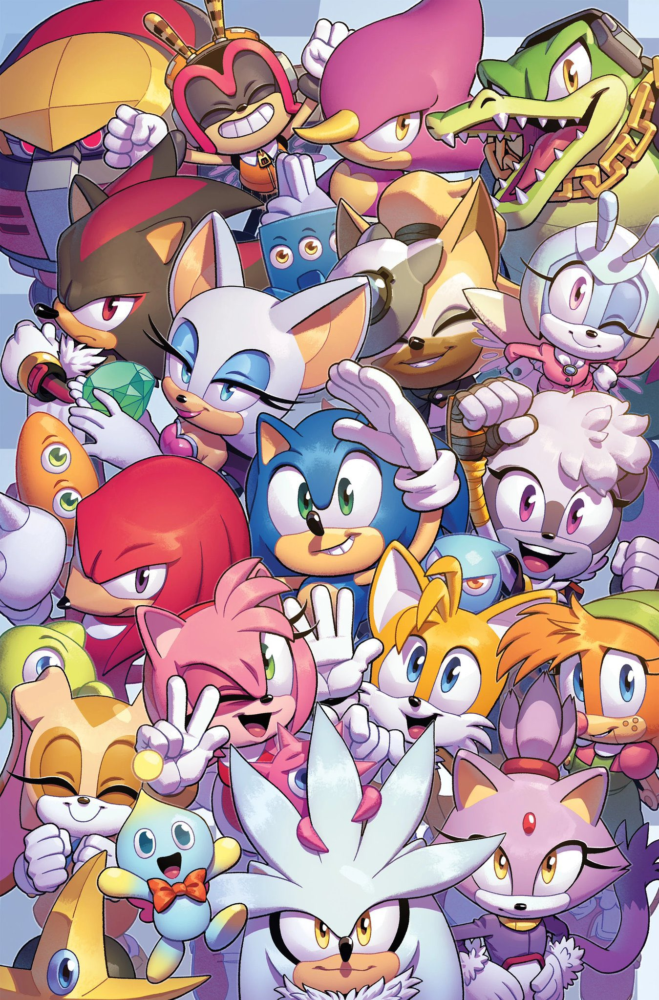

Sonic The Hedgehog
Sonic The Hedgehog
About Sonic
Sonic is a video game character and the mascot of the Japanese company Sega. He is a blue anthropomorphic hedgehog who is quite speedy, using his saw like quillsto defeat Dr. Eggman in his evil schemes.

Sonic the hedgehog and his friends
Sonic’s characteristics
- He is very fast
- He is snarky
- He loves chilli dogs
- He lives by his own rules